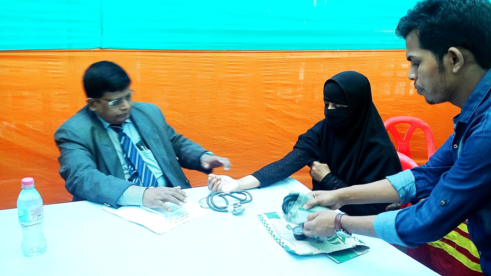

• Founder Chairman of General Health Care for Rural Students 2007-2020
• Chairman of Scientific Seminar, USTC, 2016-2018
• Convener of Scientific Committee, Department of surgery, USTC 1999-2018
• Vice President, FEMA, Chittagong 2007-2020
• Vice President, Governing Body, United Muslim High School, Chittagong, 1999-2010
• Advisor of Kadhukhil Kinder Garden, Boalkhali, Chittagong, 1999-2020
• Member of Governing Body, Jalil Ambia College, Boalkhali, Chittagong, 2016-2017
• Member of Governing Body, Boalkhali Serajul College, Chittagong, 2017-2018
• Life Member of Bangladesh Medical Council
• Life Member of Chittagong Maa-O-Shishu Hospital Medical College
• Member of Red Crescent Hospital Chittagong
• Member of Editorial Board of Journal of World laparoscopic Hospital
• Member of WALS (World Association of Laparoscopic Surgeon)